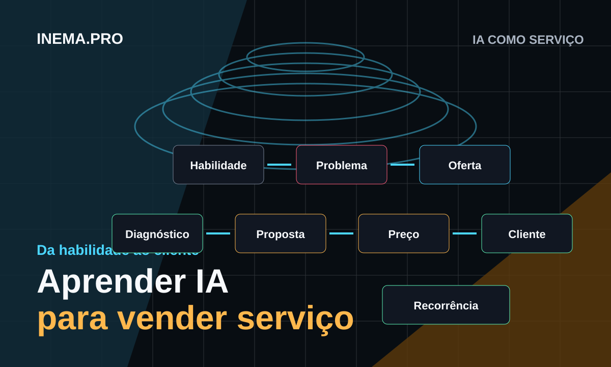

Eu sei usar ChatGPT, Codex, agentes, n8n, HeyGen e automações.
Workshop
IA como Serviço
Da habilidade ao cliente
Um workshop prático para transformar conhecimento de IA em oferta vendável, diagnóstico empresarial, proposta comercial, preço, pitch, lista de clientes e recorrência.

Promessa central
Você já aprendeu a usar IA. Agora vai aprender a transformar isso em serviço.
Eu resolvo um problema específico de uma empresa usando IA.
Resultado esperado
Ao final, cada participante sai com um kit comercial pronto para ação.
Nicho definido
Oferta principal
Oferta de entrada
Serviço recorrente
Diagnóstico de IA
Proposta comercial
Lógica de preço
Pitch de 30 segundos
Lista de clientes
Plano de 7 dias
Roteiro do workshop
Onze momentos para sair da ferramenta e chegar no cliente.
Da Ferramenta ao Serviço Vendável
Transformar habilidade técnica em uma primeira frase de oferta.
Abrir materialEscolhendo o Serviço de IA
Encaixar a oferta em uma categoria clara de serviço.
Abrir materialMontando a Escada de Serviços
Criar oferta de entrada, projeto inicial, projeto estratégico e recorrência.
Abrir materialDiagnóstico com MAPA INEMA
Mapear, analisar, priorizar e automatizar oportunidades reais.
Abrir materialDiagnóstico em Proposta Comercial
Transformar problemas identificados em uma proposta vendável.
Abrir materialPrecificação de Serviços de IA
Definir preço por impacto, complexidade, risco, suporte e posicionamento.
Abrir materialConstrução de Proposta ao Vivo
Montar uma proposta completa a partir de um caso prático.
Abrir materialConseguindo os Primeiros Clientes
Encontrar conversas boas em rede atual, empresas locais, nicho e parcerias.
Abrir materialPitch, Abordagem e Lista
Criar pitch de 30 segundos, mensagens e lista de 20 potenciais clientes.
Abrir materialKit Prestador de Serviços IA
Consolidar nicho, oferta, diagnóstico, proposta, preço, pitch e ação.
Abrir materialSistema Operacional do Prestador
Organizar templates, rotina, indicadores, manutenção e expansão.
Abrir materialMétodo comercial
Ferramenta não é oferta. Resultado é oferta.
- Ferramenta ChatGPT, agente, n8n, Codex, HeyGen.
- Aplicação Atendimento, documentos, vendas, conteúdo, processos.
- Problema Demora, retrabalho, perda, desorganização.
- Solução Assistente, base de conhecimento, automação, ferramenta interna.
- Oferta Um serviço que a empresa entende, deseja e compra.
Cardápio de serviços
O participante escolhe uma primeira oferta para vender.
Diagnóstico de IA
Assistente de Atendimento
Assistente Comercial
Automação de Processos
Base de Conhecimento
Operação de Conteúdo
Implantação para Equipes
Ferramentas Internas
Formato sugerido
Distribuição em dois dias de trabalho prático.
O que vender
Oferta, categoria, escada de serviços, diagnóstico e proposta.
Como vender
Preço, proposta ao vivo, primeiros clientes, pitch e kit final.
Entrega final
Uma proposta real pronta para ser apresentada.
Cada participante finaliza o workshop com uma oferta estruturada e uma proposta para uma empresa que possa efetivamente abordar.
Materiais